Lawrence Livermore National Laboratory, Stanford University,
University of Virginia and Tungsten Graphics, Inc.
This work was performed under the auspices of the U.S. Department
of Energy by University of California, Lawrence Livermore National
Laboratory under Contract W-7405-Eng-48. UCRL-MI-202411
Over the past few years, progress in consumer graphics card capabilities and desktop CPU performance, coupled with advances in high-performance networks, have enabled a new generation of super-computer: the commodity cluster. These new clusters, built from collections of off-the-shelf PCs outfitted with consumer graphics cards, offer nearly limitless power for the rendering and display of 3D graphics. However, the application programming interface (API) to these systems was not designed for large, parallel clusters. Chromium provides a common parallel graphics programming interface to support such clusters. In addition, it allows most existing applications to run without modification, and enables creation of powerful new parallel graphics applications capable of fully exploiting the power of these clusters.
Chromium provides a number of key capabilities, uniquely combined into a single package:
Novel method for synchronizing parallel graphics commands
"Streaming" graphics pipeline based on the industry standard OpenGL API
Support for multiple physical display devices clustered together, such as "powerwall" displays
Support for aggregation of the output of multiple graphics cards to drive a single display at higher levels of performance/capability
Application-transparent plug-in mechanism supporting custom graphics pipelines
The Chromium infrastructure has been adopted by a large number of users and is rapidly forming the basis of a great deal of clustering research. Chromium's capabilities have not only proven to be useful on graphics clusters, but the technologies are also useful on the single desktop PC.
While distributed processing using clusters of off-the-shelf PCs has become a key technology for high-performance computing and has been used for many kinds of computational problems, graphics and visualization applications have not been able to fully take advantage of this new technology. Chromium provides a way for interactive two and three dimensional graphics applications to take full advantage of powerful distributed, graphics-enabled clusters of off-the-shelf (commodity) PCs. It provides a mechanism that allows applications to draw computer graphics imagery on such clusters with a high degree of scalability, and offers unique capabilities not previously available, even on traditional desktop computer workstations,
Although several software technologies had emerged to allow general-purpose computing applications to harness the capabilities of commodity clusters, none had been available for graphics processing. Chromium creates a way for any program using the OpenGL standard, even older ones, to take advantage of cluster technology.
Chromium provides graphics scalability on three fundamental axes: quantity of data, rendering capability, and display capability.
Chromium's data scalability means it has the ability to handle increasingly larger datasets on increasingly larger clusters.
Rendering scalability is the ability to increase rendering performance or its capacity (for example, rendering more triangles per second or more pixels per second). Rendering capability can be increased by aggregating together multiple commodity graphics cards (in the form of multiple PCs) to draw one image.
Display scalability is the ability to use increases in rendering capabilities to generate larger output images. This could take the form of tiled displays made up of multiple individual displays or projectors, or it could take the form of a single display much larger than could be driven at acceptable rates by a single graphics card. Chromium provides graphics applications with software mechanisms for parallel processing that provide simultaneous scaling in all three axes.
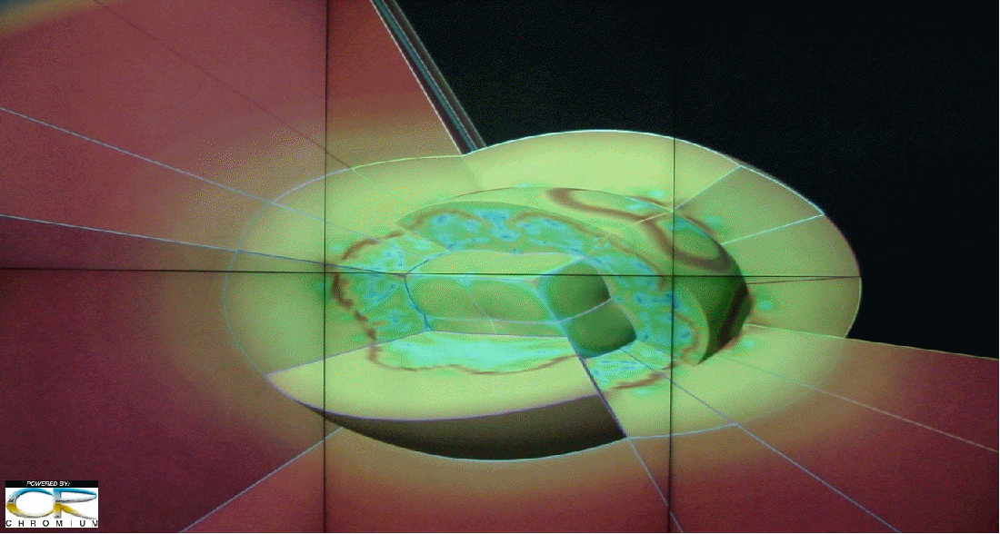
In addition to allowing graphics programs to run on distributed-memory graphics clusters, Chromium's application programming interface (API) also provides a way for existing and new programs to effectively exploit these capabilities in unique ways. Because it dynamically replaces a system's native OpenGL libraries with a Chromium library when the application is executed, Chromium can be used by any existing OpenGL application without modification. This allows new parallel applications to be written that use the OpenGL extensions Chromium provides to facilitate even greater levels of system scaling.
Chromium greatly simplifies the development of new parallel applications by providing a utility library (CRUT), modeled after the GL utility library (GLUT). Chromium's library allows essentially unmodified GLUT-based applications to be automatically converted to run as parallel applications.
In short, Chromium provides a beginning-to-end software architecture that enables the execution of scalable rendering and graphics applications on distributed-memory graphics clusters, integrated with scalable and remote-display technologies.
How does it do it?
The past few years have witnessed a revolution in computer graphics solutions for PCs, driven largely by the demands of computer gaming. The Chromium project was started with the aim of harnessing this revolution in the form of scalable commodity clusters by making this dramatic leap in graphics performance accessible to parallel applications. The name Chromium was derived from the phrase: "Clustered Rendering" or CR for short. CR happens to be the atomic symbol for element Chromium; hence the project name. Chromium is a collection of a number of core technologies. Several were prototyped in a project at Stanford known as WireGL. Chromium began as a follow-on project to WireGL and it includes a number of the core WireGL features. Several papers that refer to the WireGL project and describe these technologies are included in this entry. We ask that reviewers consider that these core WireGL technologies have been entirely incorporated, and in several cases extended, in the Chromium project.
Since its public release, the Chromium system has proven to be an extremely popular infrastructure. There have been over 18,000 downloads of the software. Major applications vendors (e.g. CEI) have demonstrated prototypes of their commercial software packages with specific modifications to exploit the parallel rendering capabilities of the system and it has been put into production use at national laboratories and a number of research institutions. Recently, Chromium was singled out in a list of influential open source graphics tools by LinuxWorld magazine. Perhaps the most telling examples of its widespread adoption have been the involvement of major computer systems vendors in the project. IBM has supported the work through their Deep View research efforts, SGI has announced plans to support and contribute to the project and several smaller vendors (e.g. Graph Stream) distribute and support Chromium on their cluster offerings.
Chromium's strength stems from its seamless integration of several pieces of novel technology. These include
an OpenGL API interception mechanism
an efficient stream processing model based on OpenGL
an optimizing state tracking mechanism
a method for extending OpenGL
a programmable pipeline realization system (the "mothership").
Chromium can be used with or without DMX or with other components as needed. Chromium is part of an Open Source software stack that can be scaled to large parallel systems and provides a series of conceptual abstraction layers. The basic software stack is illustrated below:
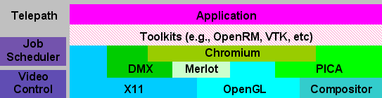
Parallel applications may or may not sit on top of higher level toolkits such as VTK.
Other layers include:
Chromium provides an OpenGL abstraction which includes a parallel interface and a generalized stream processing layer.
Distributed Multi-headed X (DMX) provides a distributed X11 server implementation that aggregates a number of X11 servers into a single X11 server.
Parallel Image Compositing API (PICA) provides a standard API abstraction for hardware and software compositing systems.
MIDAS provides indirect rendering and digital image delivery mechanisms that allow for the separation of 3D rendering from image delivery.
Merlot provides a flexible image transport service that allows distributed applications to leverage existing image compression and delivery technologies.
Telepath provides visualization scheduling, session and resource control.
For more information, see VIEWS Visualization.
Chromium is based on the industry-standard OpenGL applications programming interface. OpenGL applications must dynamically link to this library in order to support a variety of graphics cards. Chromium exploits this dependency by using its own interception library to masquerade as the system's OpenGL library.. A side effect of this is that Chromium is entirely transparent to a running application. Through this mechanism, Chromium takes control of all three-dimensional graphics rendering by the application The design of this interception library is such that it allows for Chromium to use the computer system's native OpenGL implementation, ensuring access to the computer's high-performance, hardware-accelerated rendering functions. The Chromium OpenGL programming interface includes all of standard OpenGL through version 1.5, including many of the most common and innovative graphics extensions available, such as vertex and fragment programs.
Once Chromium has control of all rendering done by an application, all OpenGL graphics commands are converted into a stream of partially ordered graphics commands. Because the Chromium stream is based on the industry standard OpenGL API, existing applications can be easily interfaced to the system and the system can exploit graphics cards with high-performance OpenGL interfaces. It is important to note that this stream is largely conceptual rather than literal, and that it is only physically realized as a network stream when it becomes necessary for graphics commands to move from one computer in the cluster to another.
This stream basis allows Chromium to naturally extend from a single computer to distributed-memory clusters, using an extremely efficient network abstraction layer. The network subsystem is more efficient than other options (e.g., the GLX protocol), and organizes the encoding in such a way as to increase the overall network utilization. This is a critical point when operating on modern, high-performance interconnects.
A novel aspect of Chromium is how these graphics streams are represented in the system. While a stream can take the form of encoded bytes on a network, this form is only used when physically moving between cluster nodes. Within a node, the stream takes the form of OpenGL function calls. Chromium provides a construct referred to as the stream processing unit, or SPU (pronounced "spew"). A SPU provides a data structure through which the Chromium rendering stream is passed in the form of OpenGL function calls. The SPU provides all the potential function calls of an OpenGL implementation. This construct results in a fixed interface that makes possible the concept of a SPU chain, a collection of SPUs linked together transparently without the need for network transport of the stream.
One unique feature of the SPU system design is that a SPU need not implement the entire OpenGL API. Chromium allows a SPU to inherit from other SPUs. By default, a SPU inherits from a "passthrough" SPU, which allows an upstream SPU to directly call a downstream SPU, bypassing all the SPUs in between that are not needed for a given OpenGL function call. Thus, Chromium's SPU chains can avoid introducing any unnecessary performance overhead for deep collections of SPUs. It also has the side effect of keeping SPU development simple, which allows for all types of extensions to be developed by others outside of the Chromium core software layer.
The Chromium system combines a collection of specially designed SPUs, and a mechanism for realizing them at application invocation, transparently with network encoding, transport and decoding mechanisms. Chromium provides application scalability through the Tile-Sort SPU, parallel API and various other rendering SPUs.
A key feature of this network stream processing system is its ability to track the OpenGL state. OpenGL has a very complex system state that includes elements like colors, textures, rendering modes, etc. Most notably, it can be expensive to change the OpenGL state because it interrupts pipelined rendering operation. Chromium has the ability to efficient track the OpenGL state and to issue the minimum number of graphics commands necessary to transform the current OpenGL state to any given target state. This feature, referred to as "state tracking," allows Chromium to ignore redundant OpenGL calls and further streamline any resulting rendering stream.
Chromium uses this state-tracking system in conjunction with a Tile-Sort SPU to provide a mechanism for converting a single incoming stream into a set of parallel streams that are spatially bounded. An example would be taking a single incoming stream and rendering it in multiple streams to "tiles" in a powerwall display, where each output stream corresponds to one output projector or tile of an aggregate display.
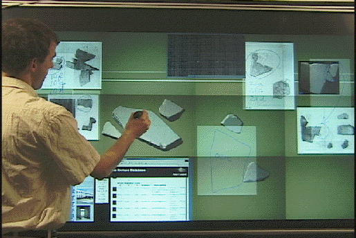
In providing a solution to allow graphics processing to take advantage of commodity clusters, Chromium also became a highly flexible, extensible system that can be used by developers in ways not originally envisioned. Chromium makes it possible to extend and enhance the OpenGL API to drive devices that couldn't have been considered before. It has also enabled other, novel uses, such as using Chromium for the debugging of graphics applications and as a custom acceleration mechanism for desktop applications.
There are a number of other common types of Chromium SPU extensions based on abstraction of the "rendering" operation. These types of SPUs can be used to change the "look" of rendering (such as making all rendering have a "blueprint" look) or perform render scaling via the conversion of geometry to images. The OpenGL API supports both classical geometry (e.g., lines and polygons) as well as rectangles of color or depth pixels. This allows Chromium to seamlessly model the conversion of geometry into pixels via a "rendering" operation that uses the local graphics hardware on a given cluster node. Various SPU developers have used this to perform "remote" rendering operations such as to PDAs from clusters, and to drive large, network-attached displays (for example, the IBM T221 display via the Scalable Graphics Engine network frame buffer shown below).
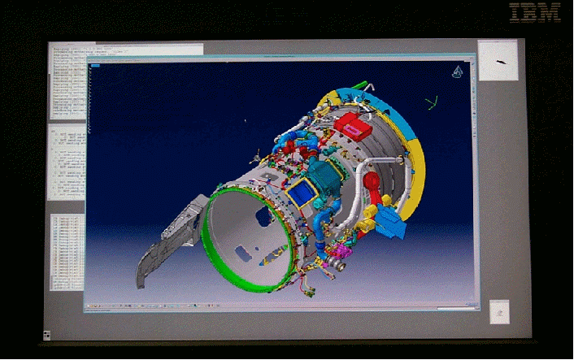
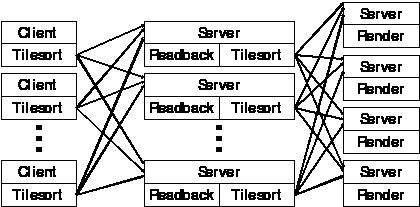
Perhaps the most important use of Chromium's extension capability is in rendering aggregation - providing scalability for large, decomposed datasets via the "binary-swap" image-compositing SPU. This allows for all the rendering to occur locally on the nodes with the application data, while a final image is generated by pushing augmented images into the rest of a Chromium SPU pipeline. This allows a number of nodes of a cluster to be used to generate a single image or drive an individual display.
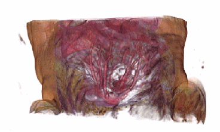
One very important way in which Chromium differs from OpenGL is that
Chromium supports parallelism. OpenGL itself is a serial API that
guarantees that commands are executed in the order they are made by the
serial source. This mode of operation is not feasible in parallel
clusters, because it would imply communication among all the nodes in a
cluster with every function call to ensure global ordering. The approach
taken in Chromium is to exploit the fact that, for most applications, a
strict ordering is not necessary. Most applications only require that
collections of commands be executed before or after each other, so the
addition of basic parallel barriers and semaphores suffice to ensure
proper primitive rendering order. We introduce a set of three such
synchronization primitives (glBarrierExec(), glSemaphoreP() and glSemaphoreV()) that are not immediately executed;
rather they are encoded directly into the rendering stream, avoiding
expensive global communication. These primitives are resolved at any
network collection point in the stream (any point in the SPU pipeline
that supports the merging of multiple streams). Normally, this is
performed late in the pipeline, which avoids system overhead in the
application nodes and much of the potential resource contention.
The Chromium system is instantiated through a system referred to as the "Mothership." The mothership sets up and manages Chromium's processes by dynamically reconfiguring system components. The mothership also deploys all the incoming and outgoing resources, and is responsible for ensuring that all the SPU chains and network connections are made on application demand. The mothership system provides resource allocation and negotiation and can be queried and hinted by an application. For example, an application can check to see if it is running under Chromium and if so, inform the mothership that it intends to perform parallel volume rendering.
The mothership design is also unique in that it is not based on classical static configuration files like other systems. The Chromium mothership is based on "executable" configuration scripts written in Python. These scripts can negotiate a dynamic rendering configuration with both system resource handlers (e.g., a cluster node allocator) and other configuration scripts. This allows for more general configurations than static configurations can support and allows Chromium to adapt to the dynamically changing environments often encountered in commodity graphics clusters. The resulting system has been used to realize a broad spectrum of rendering configurations customized for specific application requirements and cluster capabilities.
Some example configurations illustrating various types of parallel processing and various rendering targets are included here. Of these, the first two can be found in both Chromium and other systems, but the last three are unique to Chromium. Only Chromium is capable of all five of the illustrated configurations. In these diagrams, red lines represent geometry and green lines represent images transported over the cluster network and in general, a list of SPUs is included in labels.
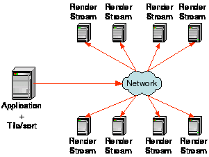
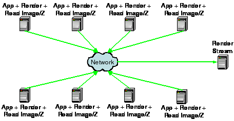
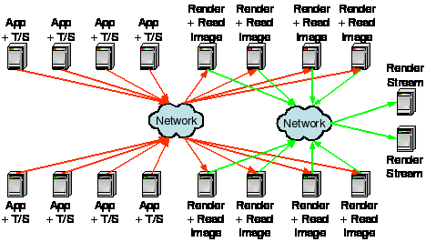
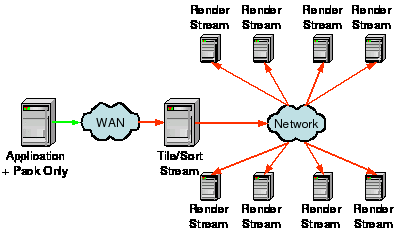
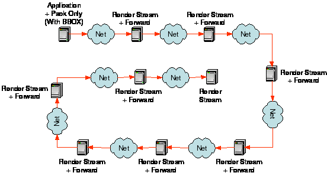
The Chromium system has been demonstrated to provide scalable performance in a number of different configurations. The parallel OpenGL API has been used to demonstrate input scalability, the tile-sort SPU has been used to demonstrate output scalability and the binary-swap SPU has been used to demonstrate rendering/data scalability. The details of these tests are included in the various published papers included on the accompanying CDROM. Chromium is the only system to be able to demonstrate scaling along all three axes, and it can do so simultaneously.
There are a number of products with feature sets that overlap those of Chromium at some level. To the best of our knowledge, there is no competitor that covers the full array of features that Chromium does.
SGI, Multipipe SDK, http://www.sgi.com/software/multipipe/sdk
The SGI Multipipe SDK is an API designed for use on SGI shared-memory, multiple-CPU systems. The SDK is designed to simplify the use of multiple, full-screen, graphics pipelines in shared-memory parallel applications. The system replaces some of the OpenGL API with helper functions that call the SDK. It is intended for new application development. Applications must be modified to use this system.
VRCO, Cavelib, http://www.vrco.com/products/cavelib/cavelib.html
Cavelib is a parallel graphics library optimized for use in virtual reality applications. It provides an abstraction of multiple, full-screen graphics pipelines for both shared- and distributed-memory parallel applications. Cavelib controls both the display and the input to the application program. For parallel applications, it requires that a complete copy of the application run on all systems and that each copy drive one display. Applications must be modified to use this system.
RedHat, Distributed Multiheaded X11/GLX Proxy, http://dmx.sourceforge.net
The Distributed Multiheaded X11 (DMX) project provides an interface called GLX Proxy. GLX proxy allows an unmodified OpenGL application to render to multiple tiles of a powerwall. The system is based on the GLX network protocol for OpenGL and only supports non-parallel applications. It operates by broadcasting all the OpenGL commands to all the tiles, limiting its ability to scale with large datasets.
Distributed scene graph: OpenSG, http://www.opensg.org
Here we use the OpenSG scene graph as a proxy for a number of similar systems (e.g., Distributed Open Inventor, …). These systems are based on the scene graph rendering abstraction interface. Application data is placed into a scene graph and mechanisms in the graph are used to provide parallel semantics. Generally, the entire graph is broadcast to all the display nodes. Applications must be written specifically for these graph class structures to access these abstractions.
ModViz, Renderizer, http://www.modviz.com/products/renderizer.htm
Renderizer is a commercial tool that provides a distributed graph library. It provides an interface that can be used to transport and render geometry on various nodes of a distributed graphics cluster. While it is possible to write applications directly on top of this library, generally the library is used to support other scene graph-based applications whose scene graph systems have been ported to Renderizer.
HP sv6/sv7, http://www.hp.com/workstations/risc/visualization/overview.html
The HP sv6 & sv7 systems provide a unique hardware and software package that allows unmodified X11 and OpenGL applications to run on large, tiled displays. The system runs on HP distributed-graphics clusters. Applications OpenGL calls are intercepted and intelligently broadcast to all the tile nodes. Various configurations of video tiles allow sv6/7 applications to be able to scale rendering performance as well as display size. The system does not support explicitly parallel applications, although it will allow synchronized copies of applications to run on all nodes.
SGI, VizServer, http://www.sgi.com/software/vizserver
The VizServer product is designed specifically to support remote and collaborative rendering. It allows an unmodified OpenGL-based application to render on one system and display the resulting imagery on another, remote system. We include VizServer here due to its ability to convert a stream of OpenGL geometry into a custom stream of imagery. VizServer is only available on SGI shared-memory systems.
We compared these systems in five basic areas. The types of rendering they support along with how they interface to applications is one key element in determining where and when a given system could be used. The type of node and display aggregation that a given system supports is another system differentiator. These include the nature of parallel sources and displays, which outline the level and types of scaling that are supported by a system. We include a comparison of virtual reality capabilities for which some of the systems were specifically designed. Finally, we complete the comparisons with an examination of network efficiency and system availability/accessibility.
| Capability | Chromium Advantages | Chromium | Multipipe SDK | Cavelib | DMX/GLX Proxy |
| Rendering | |||||
| Legacy application transparency | Standard | Yes | No | No | Yes |
| Rendering API | Standard | OpenGL | OpenGL | OpenGL | OpenGL |
| Parallel OpenGL API | Unique capability | Yes | No | No | No |
| Parallel rendering to a window | Nearly unique | Yes, DMX extension | No | No | Yes |
| Custom OpenGL stream filters | Unique capability | Yes | No | No | No |
| Aggregation support | |||||
| Serial app, multiple displays | All three modes | Yes | Yes (threaded) | Yes (threaded) | Yes |
| Parallel app, single display | supported | Yes | Yes (w/compositor) | No | No |
| Parallel app, multiple displays | Nearly Unique | Yes | Yes (threaded) | Yes | No |
| Other parallel rendering models | Unique capability |
Render & forward Time multiplexed Several others |
Time multiplexed | - | - |
| Virtual Reality Support | |||||
| Stereo | Standard | Yes | Yes | Yes | Yes |
| Virtual reality input mechanisms | Not supported | No | No | Yes | Yes |
| Non-planar surfaces | Standard | Yes | Yes | Yes | No |
| Efficient network transport | |||||
| Geometry to image transform | Nearly unique | Yes | No | No | No |
| Geometry caching support | Standard | Server+Client | Server (display list) | Server (display list) | Server (display list) |
| Encoding of geometry and state | Unique capability | Yes | No | No | Partial |
| Target Platform | |||||
| Available as Open Source | Freely available | Yes | Limited to Irix | No | Yes |
| Specific OS Support | Common platforms | Linux, Irix, Windows, MacOS | Irix | Irix, HPUX, Solaris, Windows, Linux | Irix, Linux, AIX, HPUX, Solaris |
| Capability | OpenSG | Renderizer | sv6/sv7 | VizServer |
| Rendering | ||||
| Legacy application transparency | No | No | Yes | Yes |
| Rendering API | Scene Graph† | Scene Graph† | OpenGL | OpenGL |
| Parallel OpenGL API | No | No | No | No |
| Parallel rendering to a window | No | No | Yes | No |
| Custom OpenGL stream filters | No | No | No | No |
| Aggregation support | ||||
| Serial app, multiple displays | Yes‡ | Yes‡ | Yes | Same image |
| Parallel app, single display | No | No | No | No |
| Parallel app, multiple displays | No | No | No | No |
| Other parallel rendering models | - | - | - | Time multiplexed |
| Virtual Reality Support | ||||
| Stereo | Yes | Yes | Yes | Yes |
| Virtual reality input mechanisms | Yes | Yes | No | No |
| Non-planar surfaces | Yes | Yes | No | No |
| Efficient network transport | ||||
| Geometry to image transform | No | No | No | Yes |
| Geometry caching support | Server+Client | Server+Client | Unknown | Server (display list) |
| Encoding of geometry and state | State only | State only | Unknown | No |
| Target Platform | ||||
| Available as Open Source | Yes | No | No | No |
| Specific OS Support | Irix, Linux, Windows | Linux, Windows | HPUX | Irix |
†Scene graph subclasses generally allow raw OpenGL geometry calls.
‡Serial applications display to tiles by copying the scene graph to all the tile nodes and broadcasting graph "events.
There are a number of areas where Chromium's features represent a major improvement over competitive products. In some cases, Chromium offers unique features found in no other product. Perhaps most important is that Chromium offers all these benefits in a single package easily adoptable by applications developers.
Chromium essentially replaces a system's OpenGL, allowing applications to use Chromium without any modification. Chromium's application-transparent operation mode allows an application to run directly on a desktop workstation without Chromium, while the same unmodified application runs more efficiently on a Chromium-enabled workstation or at scale on a cluster. This application-transparent mode is a particularly important feature because it allows even commercial applications, for which source code modifications are not practical, to be used with the system. Chromium expands on this capability by allowing applications to send hints and commands to the rendering system that allow the rendering stream to be dynamically optimized by Chromium. This Chromium-aware application mode is provided through the standard OpenGL extension mechanism, allowing an application to choose its optimal mode of operation when it is launched.
Chromium is the only system that provides a true parallel OpenGL programming interface. This API allows an application to specifically insert parallel rendering control primitives into the rendering stream. This extended OpenGL interface is uniquely designed not to require any global network communication, and allows for a whole new class of parallel graphics applications to be written that combine parallel computation together with parallel rendering.
Application models for parallelism have been notoriously difficult to standardize on, particularly in the visualization space, because there are so many models of parallelism to choose among: processes, message passing interface (MPI), threads, sockets, etc. Many systems require an application to adopt a specific parallel model either explicitly (e.g., the shared memory threads model) or implicitly (e.g., a library that wrappers remote application execution entirely like Cavelib). Chromium places no such restrictions on applications. The application developer is free to choose the parallel model that is most appropriate for the application and its target platforms. This is particularly advantageous when porting existing parallel applications to graphics clusters, as there is no need to rewrite the core communication model.
Chromium is the only system based on a stream-processing model. The implementation of this model, as the OpenGL API, is a novel mechanism, allowing for the rendering platform itself to modify an application's rendering style. Perhaps more importantly, it allows for innovative rendering systems (such as graphic compositing hardware, network display devices, etc.) to be seamlessly and dynamically integrated with applications without their knowledge or modification. This results in more portable applications and greater acceptance of unique rendering systems and devices.
One unique feature of Chromium is its ability to support nearly any rendering pipeline topology. The basis of Chromium on a graphics streaming model, which explicitly integrates geometry and imagery (the OpenGL API), allows Chromium to realize not only the fundamental sort-first (distributing geometry to the right renderer/displays) and sort-last (distributing rendered images to the right displays) configurations, but also many other configurations. Examples include a render-and-forward scheme, where each node taps the graphics stream, or a "tee" rendering system where the stream is sent to two different locations (perhaps in different forms) for collaborative viewing. Chromium can change among these different models without the application's knowledge. In fact, the same application code can be used for both sort-first and sort-last rendering, a truly innovative feature of Chromium.
The principal application of Chromium is to provide a portable, scalable, parallel-graphics API for use with graphics-enabled distributed memory clusters. As a result, it encourages the development of unique applications that are only possible due to the scale of computational and graphics computing power available in such clusters or that exploit extremely large-scale collaborative displays.
A key aspect of Chromium in this mode is that it provides scalability to applications using it. Chromium supports scaling along multiple axes: dataset size (up to 23-Terabyte datasets and 500-million-triangle surfaces have been rendered under Chromium), number of rendering nodes, and number of output displays (over 60-million-pixel displays have been demonstrated). It provides this all from the same API, and in fact can scale applications along all three axes using the same rendering structure in a single application.
The design of the Chromium system has allowed it to be applied to a number of other unique applications. Some examples are included in the paper references (see Appendix B) and several of them are outlined here.
There are many examples where applications must run remote from a physical display device. Chromium's network graphics model maps easily to this situation. It allows large applications to run remotely on clusters, exploiting the graphics-rendering capacity of those systems, but routing the resulting imagery to a simpler, remote display device. Chromium has been used in this mode to provide rendering services for PDA devices. It could also be used to remotely generate dynamic imagery for applications such as web services. For example, a web service could use Chromium to generate dynamic 3D imagery for real-estate walkthroughs or automotive option reviews. Taken to its extreme, it is possible for Chromium to provide this imagery simultaneously to multiple clients, enabling collaborative web-based data-exploration tools.
Chromium makes it possible to extend and enhance OpenGL. Because the graphics pipeline in Chromium is entirely programmable, it is possible to create a plug-in module to provide a custom rendering style, without having to modify an application. By simply replacing some rendering calls with others in the pipeline, it is possible to simulate other stylistic looks. An example is the "hidden-line" SPU included in the Chromium distribution, which allows a display generated by an unmodified application to be rendered with a blueprint look.
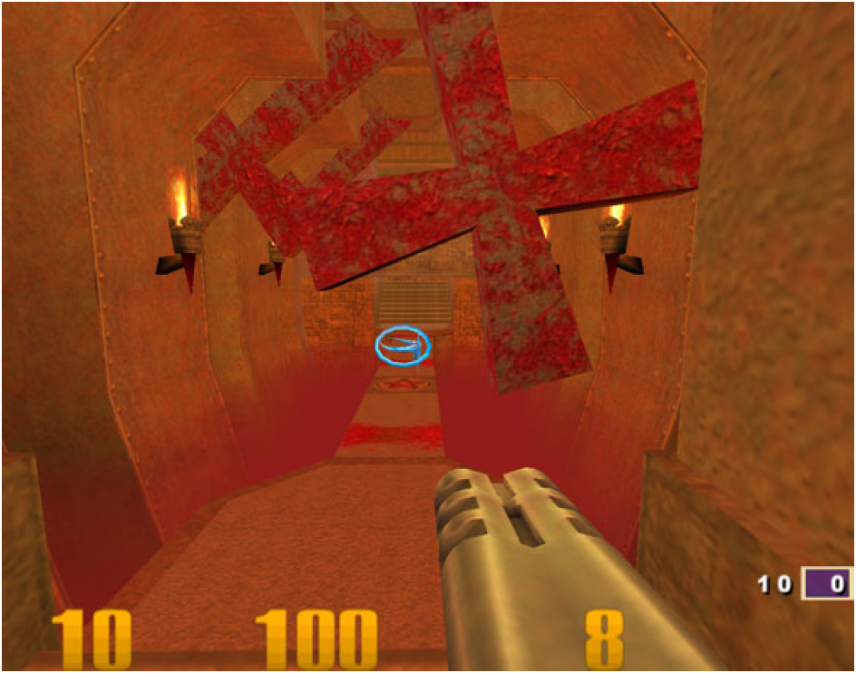 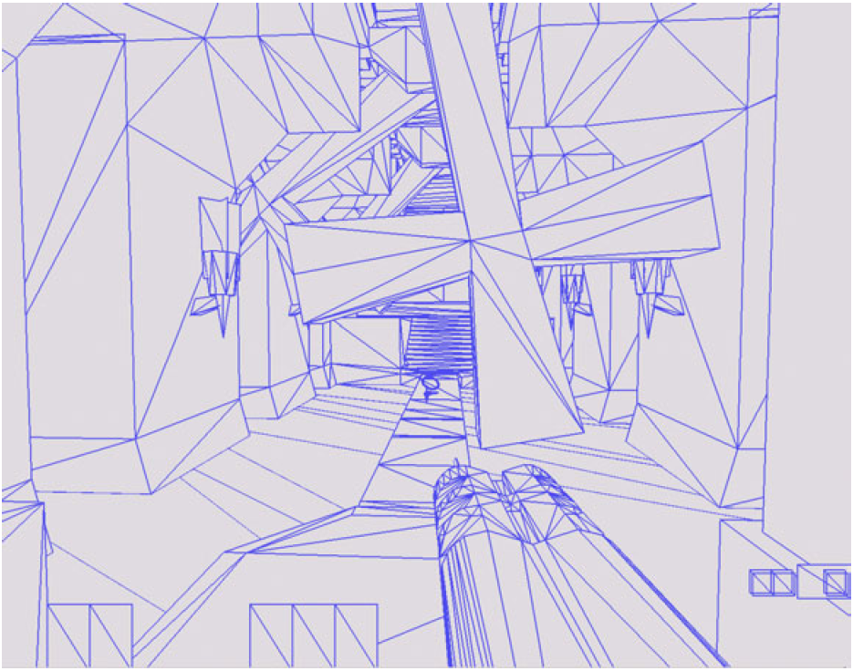
Another example of Chromium's ability to extend OpenGL is the "Archsplit" SPU, which dynamically analyzes the graphics primitive stream and breaks up the scene into floors, providing an architectural-walkthrough rendering style. Again, Chromium can provide this capability to any application without the need for modification using its ability to insert custom transformations into the graphics-rendering stream.

The Chromium stream filtering mechanism can also be used to explore other forms of graphics manipulation. For example, Chromium has been proposed as a mechanism for the automatic generation of geometric level of detail. This would make it possible for the graphics API to dynamically adapt to application demands and delivered graphics card performance. In general, this mechanism can be used to prototype and test extensions to the OpenGL API itself to explore novel concepts in both parallel graphics system design and non-parallel desktop applications.
Chromium has even been used to help debug and profile application performance. The stream representation in Chromium can be directly written to disk in a human-readable format. This makes it possible for a developer to save the set of rendering commands and analyze them externally. In fact, at least one major application was found to run faster under Chromium than without when running on a single desktop workstation. After analysis of the captured stream data it was found that the application made a large number of redundant OpenGL calls which the Chromium state-tracker suppressed, yielding the performance gain. This information made it possible to then patch the application to address these findings. Chromium also provides a SPU that collects various network and primitive statistics. Again, this information is not normally available to application developers and it can be used to address various performance tuning issues. In one case, the analysis resulted in the development of a custom application acceleration SPU that identified specific patterns in an application's graphics calls and replaced them with simpler, more rapidly executing calls.
These are samples of the types of additional applications to which Chromium has been applied. As developers, we have been continually surprised with the innovative new applications for which other people have adapted and extended Chromium.
Chromium is a unique technology package that addresses a number of pressing issues in the graphics and visualization communities. It comes at a critical point in time in the evolution of scalable graphics and display systems, namely the transition to distributed clusters of commodity (PC-based) graphics systems. This transition represents a major shift in the visualization and graphics application programming environments. By reducing the barriers to applications development on these platforms, Chromium enables a whole new class of graphics applications with access to nearly unlimited graphics processing capacity. This capacity comes at a point when datasets, both measured and computational, are increasing in size extremely rapidly, pushing the limits of graphics systems scalability to the extreme. Chromium provides a common, portable environment for application development that has demonstrated acceptance by developers and system vendors . This stems both from basing Chromium on known standards (OpenGL) and its provision of utilities to help ease the porting of applications to the cluster environment (the Chromium utility library, CRUT), as well as from its open-source, cross-platform availability. Chromium is simply more technologically advanced and readily adoptable by application developers than other solutions.
Beyond its primary importance as a tool for the simple and transparent aggregation of graphics and display resources, Chromium's basic architecture has demonstrated the ability to be used in unique and novel applications; for example, playing a critical role in the development of remote, scalable image generation. The potential list of application spaces for which Chromium can and has been applied is impressive and vast.
Based on feedback provided by numerous system suppliers and application developers, we believe the Chromium infrastructure has significantly advanced the commercial adoption, acceptance, and ultimately exploitation of an entirely new class of scalable systems architecture: the distributed, graphics super-cluster.
Several video clips documenting Chromium and various applictions (MPEG format)
The Chromium project has spawned a large number of projects at various companies and universities. A number of these projects are listed here to give a flavor of the spectrum of applications for which Chromium technology has been applied.
The Chromium project is the result of the contributions of a large number of people and organizations. We would like to recognize them for their help and efforts, without which Chromium would not have been as successful as it has been.
Organizations:
Los Alamos National Laboratory
Sandia National Laboratory
United States Department of Energy, ASCI VIEWS
program
Individuals:
Dale Beerman
Wes Bethel
Ian Buck
Nat Duca
Matthew Eldridge
Pat Hanrahan
Peter Kirchner
James Klosowski
Chris Niederauer
Terri Quinn
Samuel Thibault
David Thompson
Joel Welling
And many others, too numerous to list here…